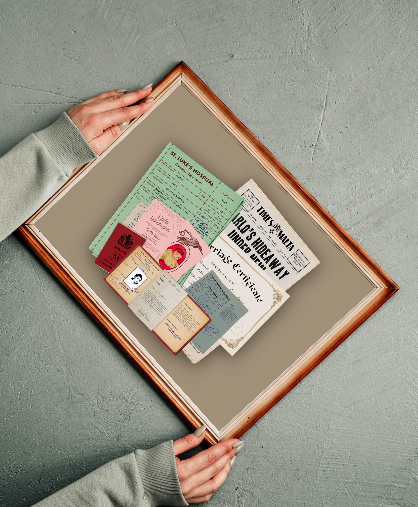
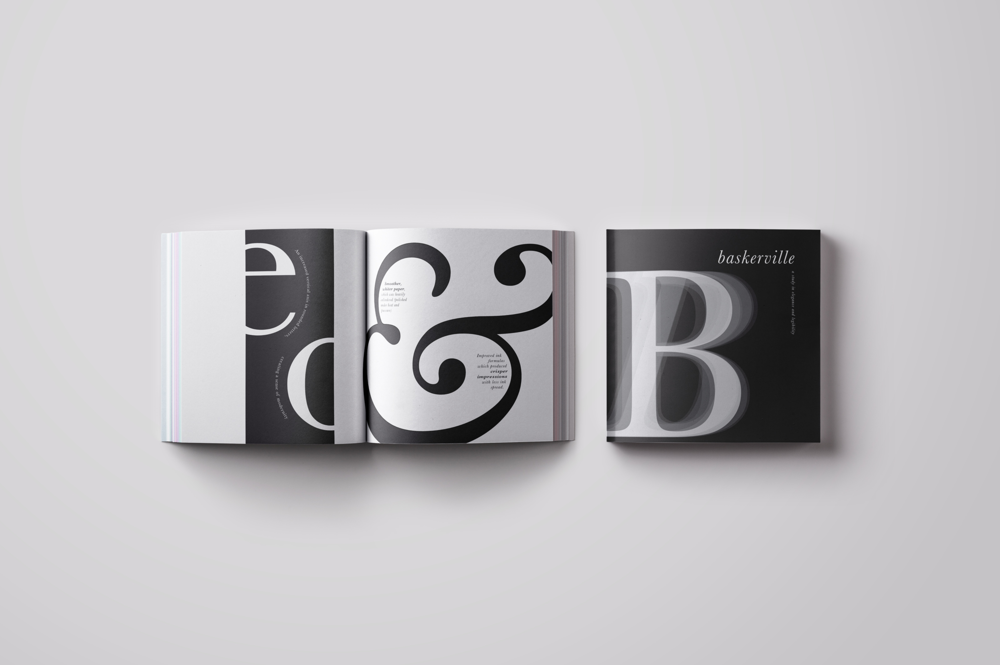
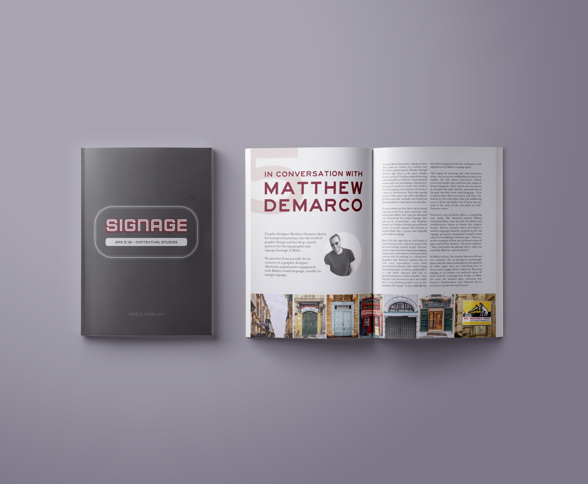
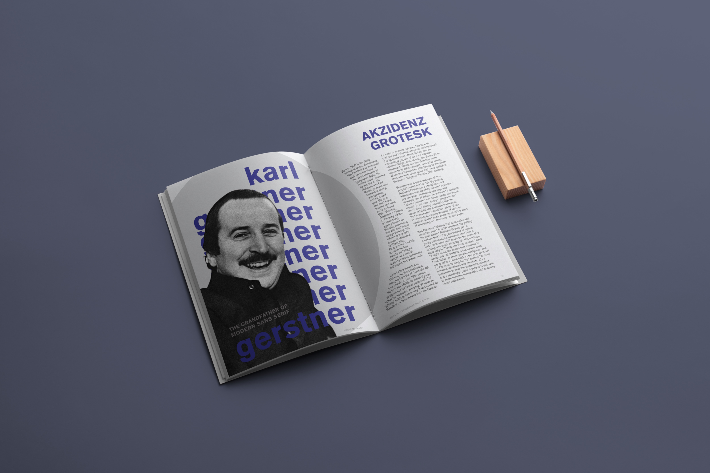
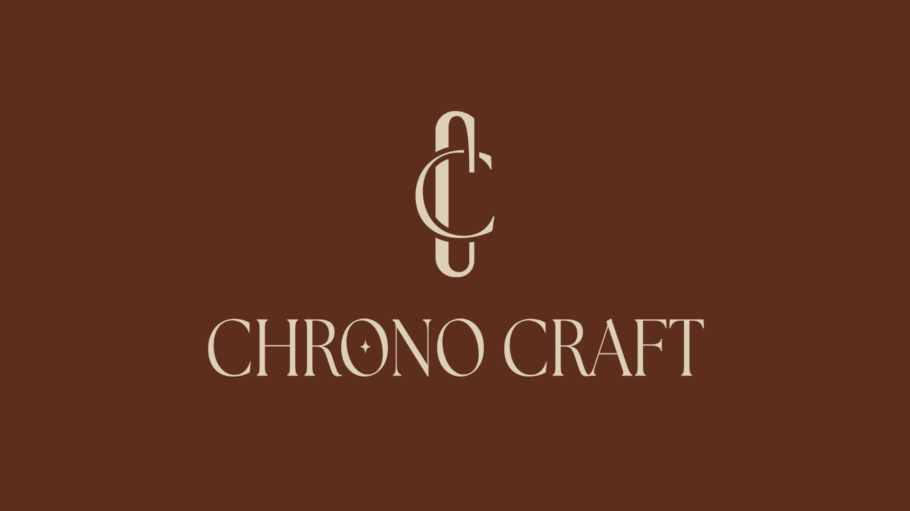
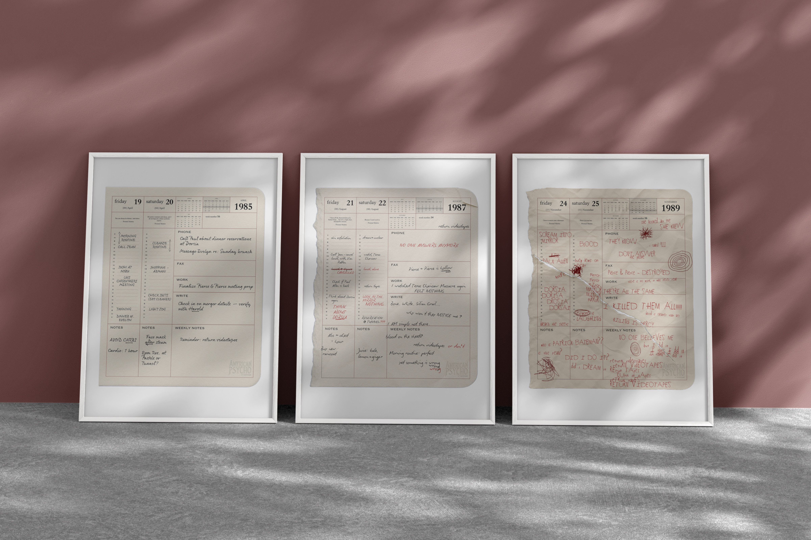
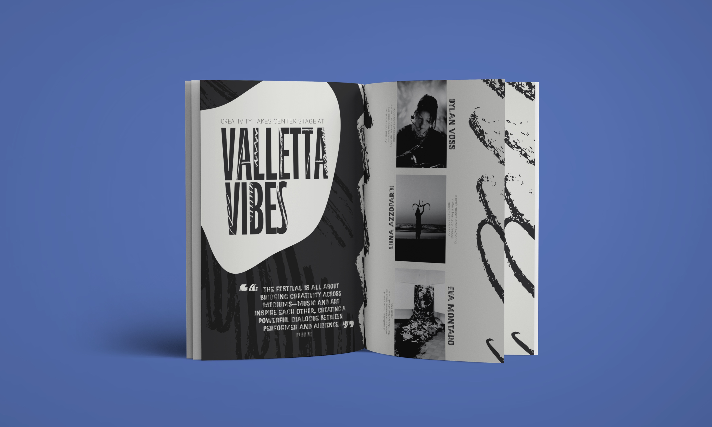

WHERE PROCESS MEETS PURPOSE

NICOLE MICALLEF
With roots in calligraphy and experience in project management, I study graphic design at MCAST to explore how form, clarity, and communication intersect.
Design is never accidental, and I am drawn to work that is built with purpose. I aim to explore how intention shapes everything from layout to message — and how clarity can be creative.
TYPOGRAPHIC EXPERIENCE
“Unsung Hero” is a visual tribute to the quiet legacy of everyday lives, told through the lens of personal documentation. This project assembles real ephemera — birth certificates, medical reports, IDs, and announcements — to honor the story of one individual and, by extension, the generation they represent.
TYPOGRAPHIC EXPERIMENTATION
This project highlights the enduring sophistication of the Baskerville typeface, drawing on its historical roots and distinctive contrast to create a carefully composed font specimen that balances clarity with character.
EDITORIAL SPREAD
This project explores the global history of signage and its relevance within the local Maltese context. It features an interview with graphic designer Matthew Demarco, founder of the Malta Type accounts, who is dedicated to documenting and preserving Malta’s rich typography and signage heritage.
EDITORIAL SPREAD
An exploration of Karl Gerstner’s systematic design philosophy and the enduring legacy of Akzidenz Grotesk — a typeface that helped define the Swiss Style and continues to influence modern visual communication.
BRANDING
ChronoCraft is a brand identity project for a fictitious luxury watchmaker rooted in tradition, precision, and timeless design. The brand celebrates the artistry of watchmaking, where timekeeping meets craftsmanship, appealing to modern connoisseurs who value both form and function.
POSTER DESIGN
Posters and logo design created as part of a collector’s boxset for the 25th anniversary of American Psycho, using stark visuals to reflect the protagonist’s mental deterioration.
PRINT PROMOTIONAL CAMPAIGN
A set of promotional materials for Valletta Vibes, including a logo, poster, brochure, and editorial spread — designed to capture the energy and cultural rhythm of Malta’s capital.
